To create a new brand identity for the public garden 'Bartram's Garden'.
About
Bartram's Garden is the oldest survivng botanical garden in North America. It is located
in Southwest Philadelphia, Pennsylvania. The aim of this project is to give it a new
brand identity, encluding but not limited to a new logo, website, merchandise and more.
Process
mmmm
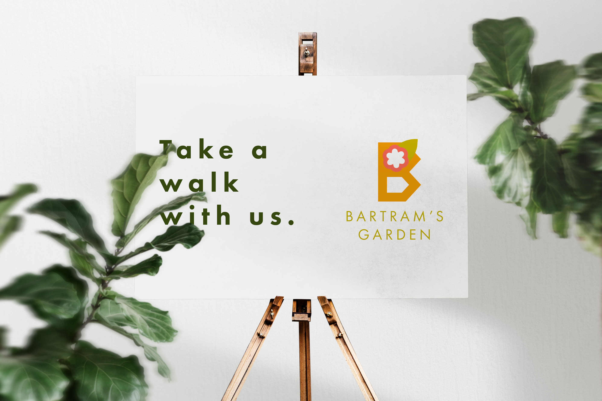
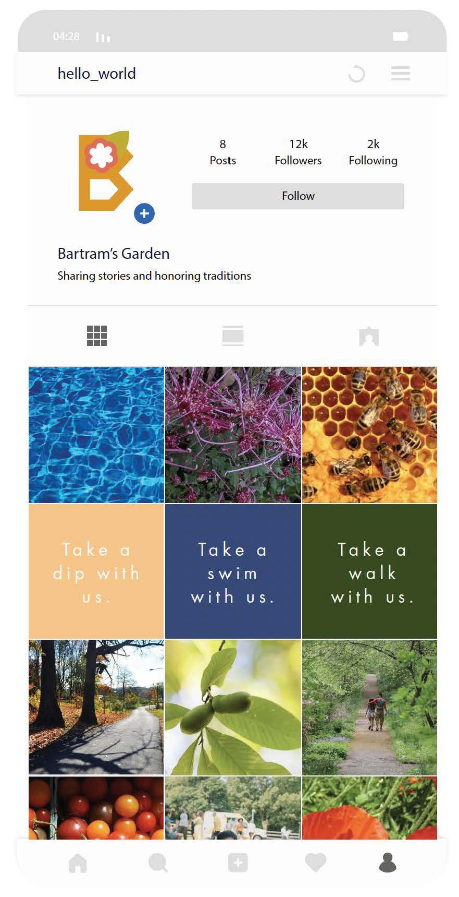
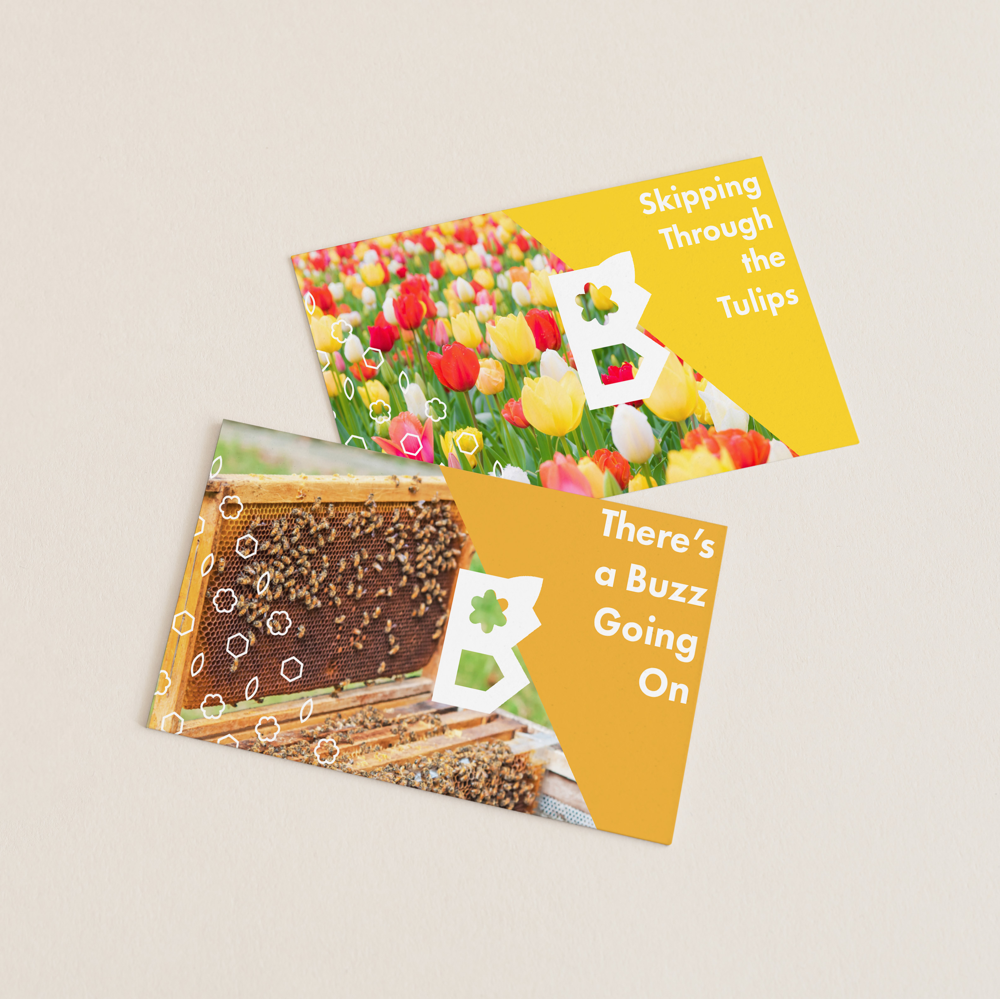
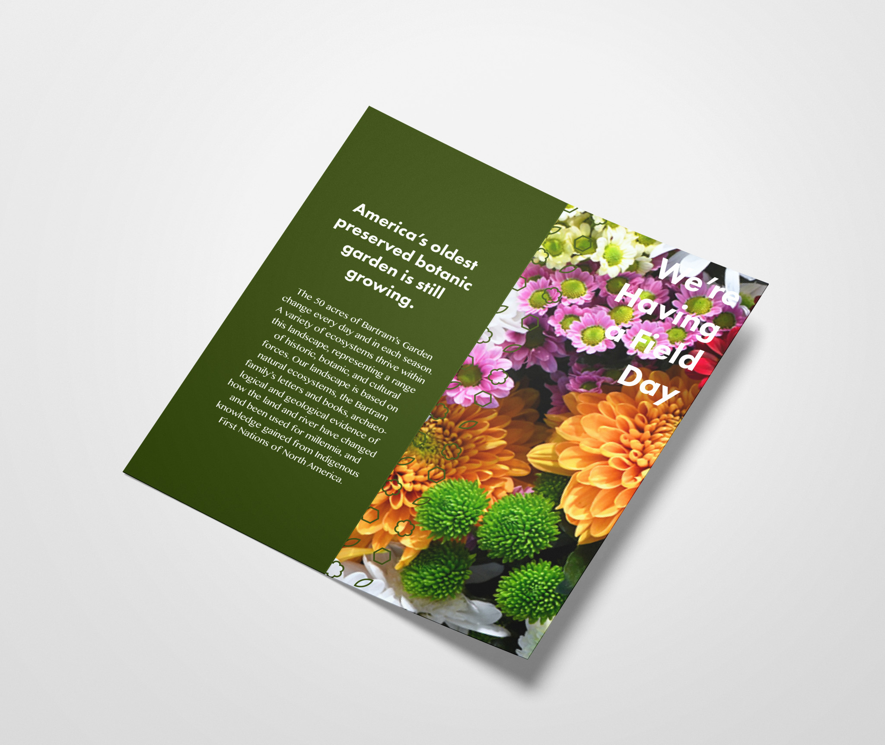
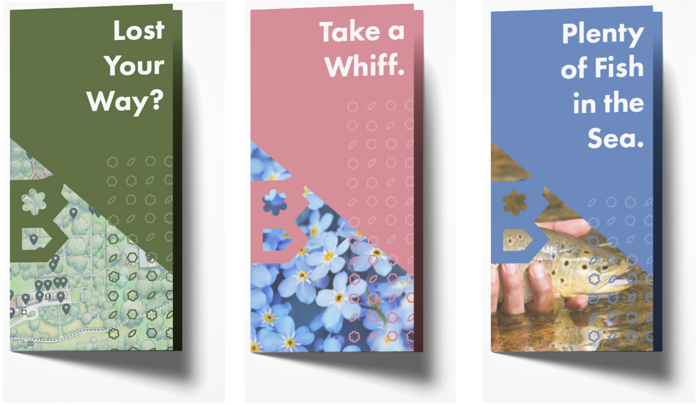
onitabeverly@gmail.com
Beverly Ifeoma Alberta ONITA / 2023

 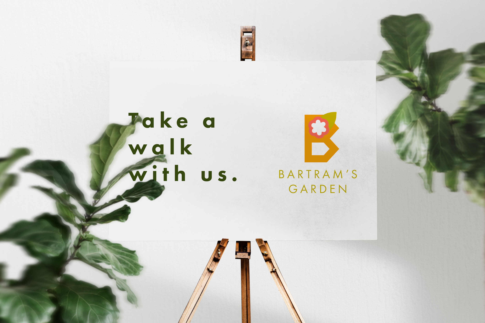
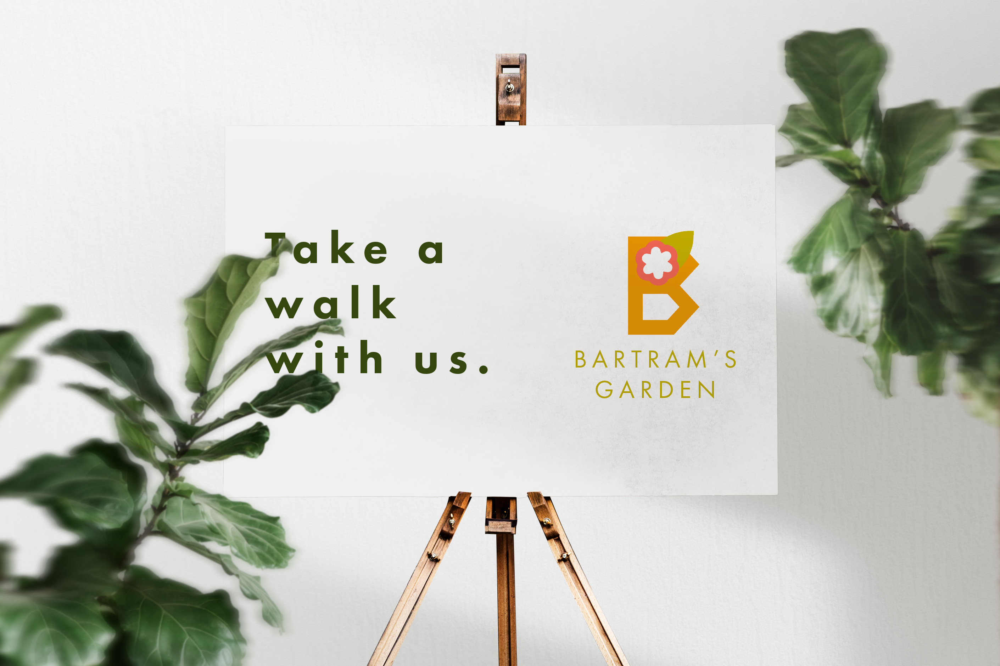
 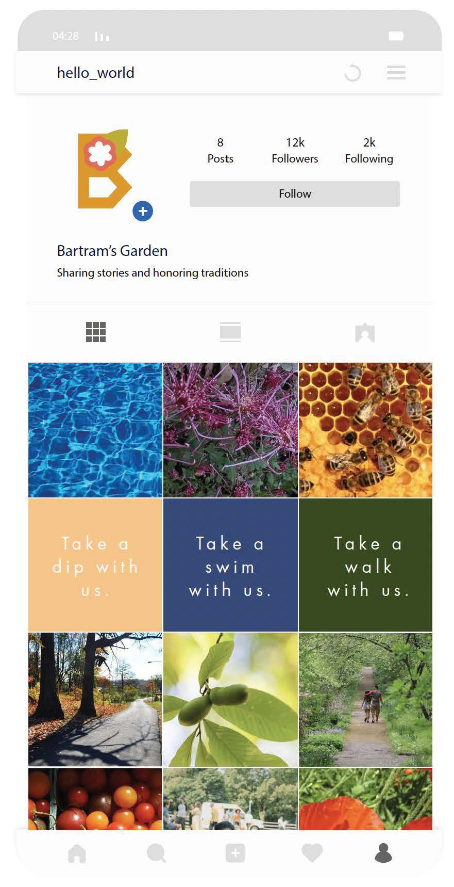
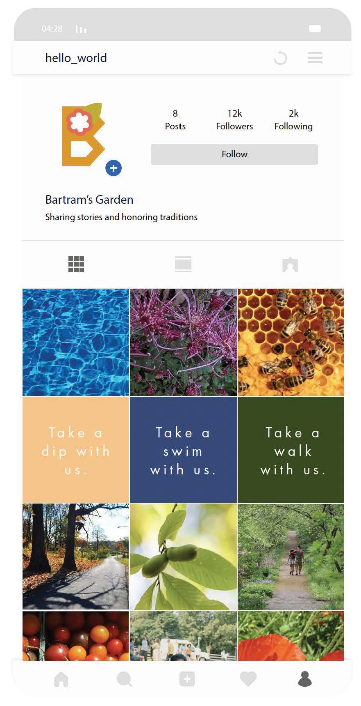
 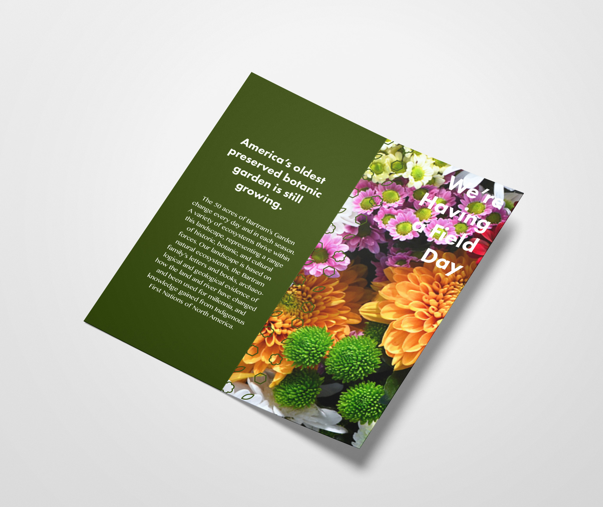
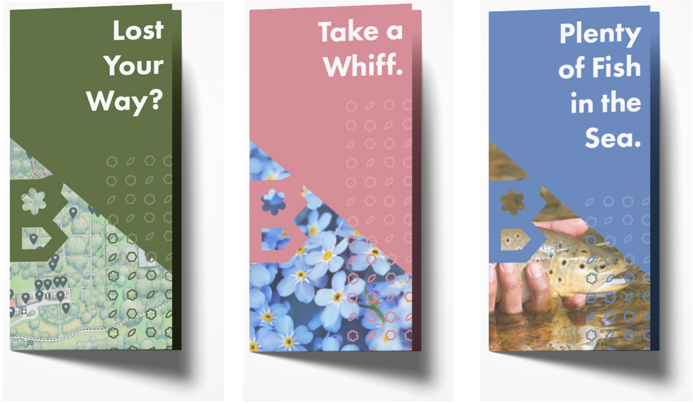
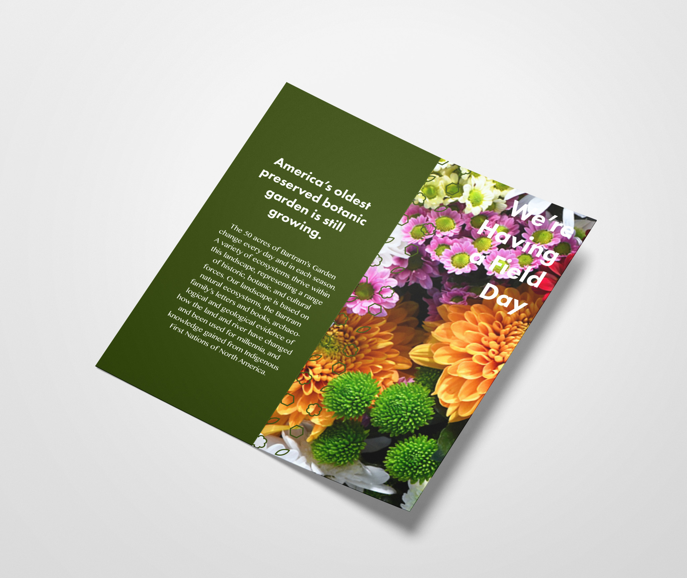
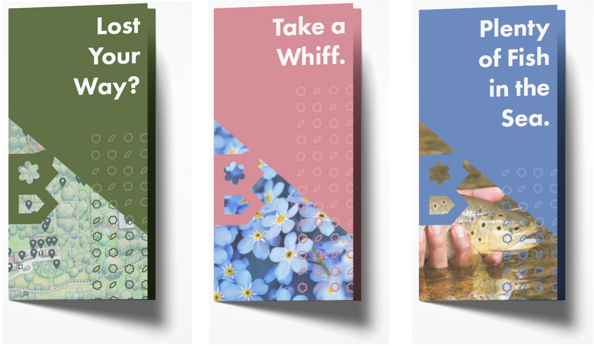